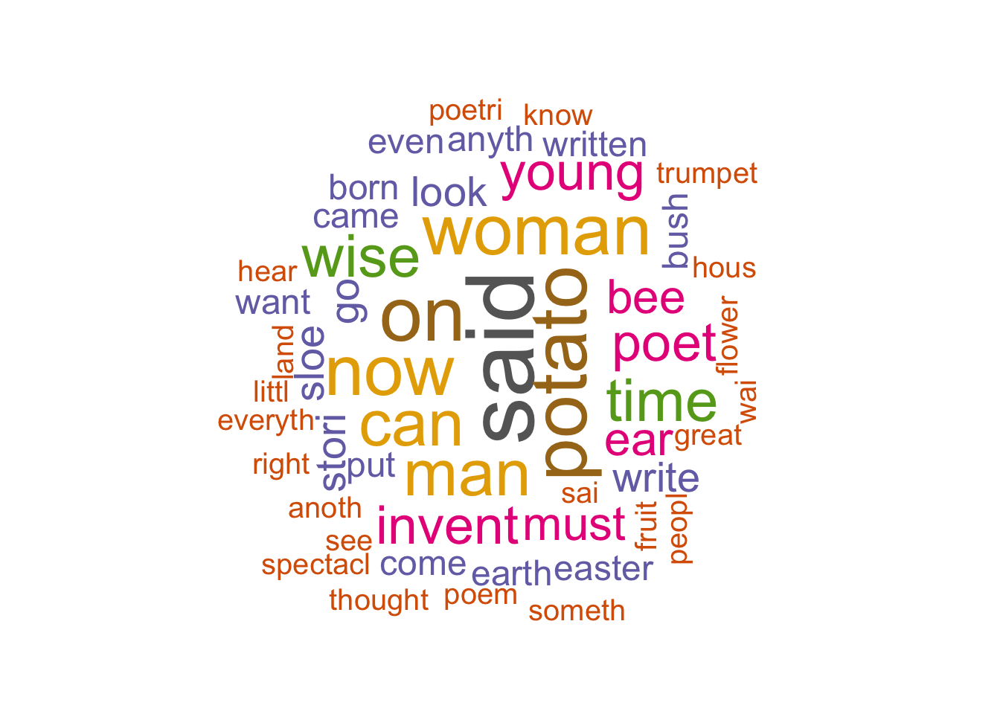
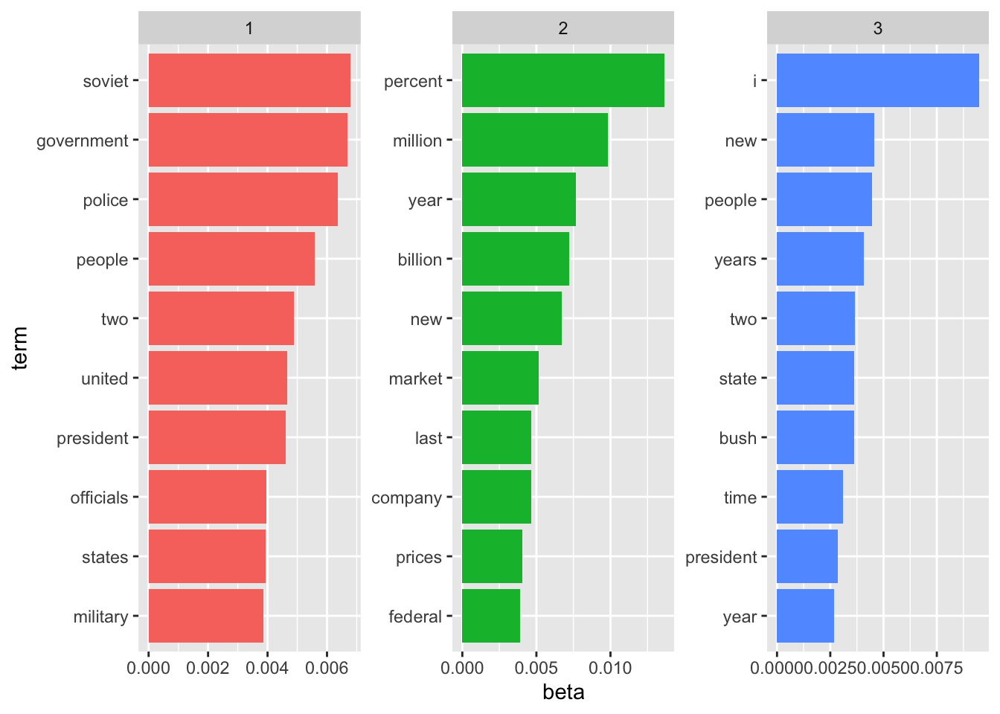

The objective of this document is to give a brief introduction to text mining and some related concepts such as part of speech tagging, tokenization, and stemming.
if(!require(hcandersenr)) {install.packages("hcandersenr")} # Fairy tales and stories of H.C. Andersen## Loading required package: hcandersenrif(!require(tidytext)) {install.packages("tidytext")}## Loading required package: tidytextif(!require(dplyr)) {install.packages("dplyr")}## Loading required package: dplyr##
## Attaching package: 'dplyr'## The following objects are masked from 'package:stats':
##
## filter, lag## The following objects are masked from 'package:base':
##
## intersect, setdiff, setequal, unionif(!require(ggplot2)) {install.packages("ggplot2")}## Loading required package: ggplot2if(!require(tokenizers)) {install.packages("tokenizers")}## Loading required package: tokenizersif(!require(SnowballC)) {install.packages("SnowballC")}## Loading required package: SnowballCif(!require(stopwords)) {install.packages("stopwords")}## Loading required package: stopwordsif(!require(wordcloud)) {install.packages("wordcloud")} # word-cloud generator ## Loading required package: wordcloud## Loading required package: RColorBrewerif(!require(RDRPOSTagger)) {remotes::install_github("bnosac/RDRPOSTagger")} ## Loading required package: RDRPOSTagger## Loading required package: rJavaif(!require(topicmodels)) {install.packages("topicmodels")}## Loading required package: topicmodelsIt is a process of splitting a text into tokens. Tokens could be sentences, characters or words. For this tutorial, we are going to look at word and character tokenization.
In the code block below, using the hcandersenr package, we first pull the tale of The fir tree.
the_fir_tree <- hcandersen_en %>%
filter(book == "The fir tree") %>%
pull(text)
head(the_fir_tree, 10)## [1] "Far down in the forest, where the warm sun and the fresh air made a sweet"
## [2] "resting-place, grew a pretty little fir-tree; and yet it was not happy, it"
## [3] "wished so much to be tall like its companions– the pines and firs which grew"
## [4] "around it. The sun shone, and the soft air fluttered its leaves, and the"
## [5] "little peasant children passed by, prattling merrily, but the fir-tree heeded"
## [6] "them not. Sometimes the children would bring a large basket of raspberries or"
## [7] "strawberries, wreathed on a straw, and seat themselves near the fir-tree, and"
## [8] "say, \"Is it not a pretty little tree?\" which made it feel more unhappy than"
## [9] "before."
## [10] "And yet all this while the tree grew a notch or joint taller every year; for by"Even though tokenization can be achieved in many ways, such as using regular expressions, we don’t need to re-invent the wheel and use a package called tokenizers. Below code block tokenize the first 5 rows of text in the tale into words.
tokenize_words(the_fir_tree[1:3])## [[1]]
## [1] "far" "down" "in" "the" "forest" "where" "the" "warm"
## [9] "sun" "and" "the" "fresh" "air" "made" "a" "sweet"
##
## [[2]]
## [1] "resting" "place" "grew" "a" "pretty" "little" "fir"
## [8] "tree" "and" "yet" "it" "was" "not" "happy"
## [15] "it"
##
## [[3]]
## [1] "wished" "so" "much" "to" "be"
## [6] "tall" "like" "its" "companions" "the"
## [11] "pines" "and" "firs" "which" "grew"You can also tokenize into characters as well.
tokenize_characters(the_fir_tree[1:3])## [[1]]
## [1] "f" "a" "r" "d" "o" "w" "n" "i" "n" "t" "h" "e" "f" "o" "r" "e" "s" "t" "w"
## [20] "h" "e" "r" "e" "t" "h" "e" "w" "a" "r" "m" "s" "u" "n" "a" "n" "d" "t" "h"
## [39] "e" "f" "r" "e" "s" "h" "a" "i" "r" "m" "a" "d" "e" "a" "s" "w" "e" "e" "t"
##
## [[2]]
## [1] "r" "e" "s" "t" "i" "n" "g" "p" "l" "a" "c" "e" "g" "r" "e" "w" "a" "p" "r"
## [20] "e" "t" "t" "y" "l" "i" "t" "t" "l" "e" "f" "i" "r" "t" "r" "e" "e" "a" "n"
## [39] "d" "y" "e" "t" "i" "t" "w" "a" "s" "n" "o" "t" "h" "a" "p" "p" "y" "i" "t"
##
## [[3]]
## [1] "w" "i" "s" "h" "e" "d" "s" "o" "m" "u" "c" "h" "t" "o" "b" "e" "t" "a" "l"
## [20] "l" "l" "i" "k" "e" "i" "t" "s" "c" "o" "m" "p" "a" "n" "i" "o" "n" "s" "t"
## [39] "h" "e" "p" "i" "n" "e" "s" "a" "n" "d" "f" "i" "r" "s" "w" "h" "i" "c" "h"
## [58] "g" "r" "e" "w"Another important process in text mining/text analysis is to getting rid of stop words, which are usually does not carry much information into your analysis. stopwords package provides various lists of stop words.
In the below code block, we again pull a story and then using unnest_token function get the unique words from the text. As you can see that there are 1287 unique words.
tale <- hca_fairytales() %>%
filter(
book == "What one can invent",
language == "English"
)
tale_word_list <- tale %>%
unnest_tokens(word, text)
nrow(tale_word_list)## [1] 1287One of the stop words lists provided by stopwordspackage is the snowball list, configured via setting the source argument. Using that list we can easily remove the stop words via dplyr’s filter operation.
As you can see, we ended up with 577 words without the stop words.
nosw_tale_word_list = tale_word_list %>%
filter(!(tale_word_list$word %in% stopwords(source = "snowball")))
nrow(nosw_tale_word_list)## [1] 577nosw_tale_word_list## # A tibble: 577 x 3
## book language word
## <chr> <chr> <chr>
## 1 What one can invent English young
## 2 What one can invent English man
## 3 What one can invent English studying
## 4 What one can invent English poet
## 5 What one can invent English wanted
## 6 What one can invent English become
## 7 What one can invent English one
## 8 What one can invent English easter
## 9 What one can invent English marry
## 10 What one can invent English live
## # … with 567 more rowsThe idea of stemming is to acquire the base word (stem) instead of dealing with different versions of the same word. Using a package called SnowballC that implements one of the widely used stemming algorithms, you can easily do stemming.
In the below code, we apply stemming thanks the wordStem function that comes from the SnowballC package.
stem_counts = nosw_tale_word_list %>%
mutate(stem = wordStem(word)) %>%
count(stem, sort = TRUE)
stem_counts## # A tibble: 316 x 2
## stem n
## <chr> <int>
## 1 said 14
## 2 on 11
## 3 potato 11
## 4 now 10
## 5 woman 10
## 6 can 9
## 7 man 9
## 8 time 8
## 9 wise 8
## 10 invent 7
## # … with 306 more rowsPart of Speech (POS) tagging is the process of categorizing the words into their grammatical properties such noun, verb, article, adjective, preposition, pronoun, adverb, conjunction, and interjection.
One of the R packages that you can use for POS tagging is RDRPOSTagger that that supports 45 languages including but not limited to English, German, French, Italian, and Turkish.
In the below code, we apply POS tagging on the words of a sample text about Rubik’s cube.
text <- "Rubik's Cube is a 3-D combination puzzle invented in 1974 by Hungarian sculptor and professor of architecture Ernő Rubik. Originally called the Magic Cube, the puzzle was licensed by Rubik to be sold by Ideal Toy Corp. in 1980 via businessman Tibor Laczi and Seven Towns founder Tom Kremer, and won the German Game of the Year special award for Best Puzzle that year. As of January 2009, 350 million cubes had been sold worldwide making it the world's top-selling puzzle game. It is widely considered to be the world's best-selling toy."
sentences <- tokenize_sentences(text, simplify = TRUE)
unipostagger <- rdr_model(language = "English", annotation = "UniversalPOS")
unipostags <- rdr_pos(unipostagger, sentences)
head(unipostags)## doc_id token_id token pos
## 1 d1 1 Rubik's NOUN
## 2 d1 2 Cube NOUN
## 3 d1 3 is AUX
## 4 d1 4 a DET
## 5 d1 5 3 NUM
## 6 d1 6 - PUNCTYou can also visualize the importance/frequency of the words via word clouds. Using the wordcloud package we depicted the most used words from the tale of What one can invent.
set.seed(1234)
wordcloud(words = stem_counts$stem, freq = stem_counts$n, min.freq = 3,
max.words=200, random.order=FALSE, rot.per=0.25,
colors=brewer.pal(8, "Dark2"))
Latent Dirichlet Allocation (LDA) is one of the most powerful topic modeling algorithms invented back in 2003. It treats each document as a mixture of topics and each topic as a mixture of words. Using the topicmodels package, we demonstrate an example of LDA on built in AssociatePress dataset, which also comes with the same package.
In the below code, based on the AssociatedPress data, we run the LDA algorithm considering 3 topics. One of the crucial things to consider when applying LDA is to decide on the number of topics. For the sake of example, we set it to 3.
set.seed(1234)
data(AssociatedPress)
ap_lda = LDA(AssociatedPress, k = 3)
ap_lda## A LDA_VEM topic model with 3 topics.Below code block presents the per-topics probabilities (beta-β) of each word along with the associated topic number.
ap_topics = tidy(ap_lda, matrix = "beta")
ap_topics## # A tibble: 31,419 x 3
## topic term beta
## <int> <chr> <dbl>
## 1 1 aaron 2.05e- 6
## 2 2 aaron 4.53e-12
## 3 3 aaron 5.55e- 5
## 4 1 abandon 3.95e- 5
## 5 2 abandon 4.94e- 5
## 6 3 abandon 2.02e- 5
## 7 1 abandoned 9.42e- 5
## 8 2 abandoned 1.47e- 5
## 9 3 abandoned 1.41e- 4
## 10 1 abandoning 8.77e- 6
## # … with 31,409 more rowsLastly, using the ggplot2 package we plot the top 10 most used words per topic.
ap_top_terms = ap_topics %>%
group_by(topic) %>%
top_n(10, beta) %>%
ungroup() %>%
arrange(topic, -beta)
ap_top_terms %>%
mutate(term = reorder_within(term, beta, topic)) %>%
ggplot(aes(term, beta, fill = factor(topic))) +
geom_col(show.legend = FALSE) +
facet_wrap(~ topic, scales = "free") +
coord_flip() +
scale_x_reordered()
Perplexity is a statistical measure of how well a probability model predicts a sample. You can calculate the perplexity of a model with the following code.
perplexity(ap_lda)## [1] 3302.95Let’s create another model with k = 5 and compare it with our original model with respect to the models’ perplexity scores.
ap_lda_5 = LDA(AssociatedPress, k = 5)
perplexity(ap_lda_5)## [1] 2938.543For perplexity scores the lower the better. So, we can say that setting the number of topics to 5 is better than the setting it to 3.
In order to predict a topic of a given document, you can use the posterior method.
prediction = posterior(ap_lda_5, AssociatedPress[1, ])
prediction$topics## 1 2 3 4 5
## [1,] 0.2706845 0.0003167714 0.0003167712 0.7283652 0.0003167747apply(prediction$topics, 1, which.max)## [1] 4Given the first document from AssociatedPress, we can see the normalized likelihoods above and the 3rd topic has the maximum likelihood.